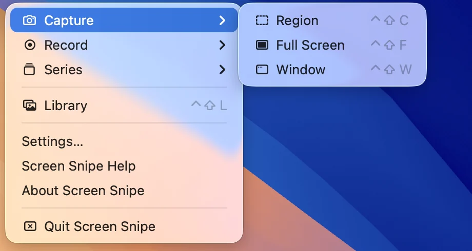
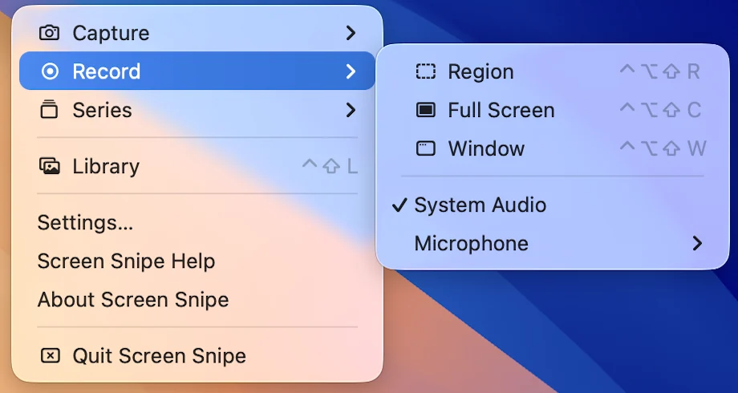
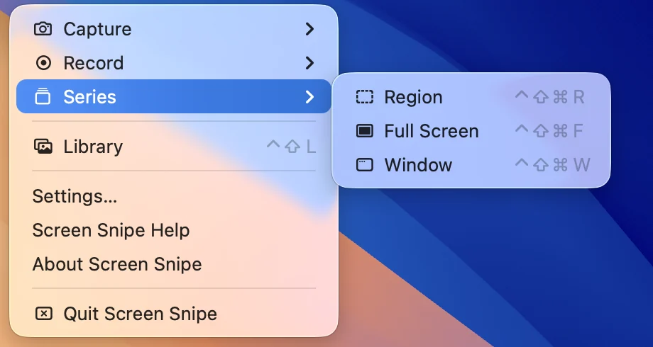
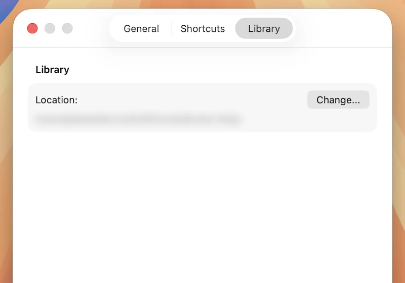
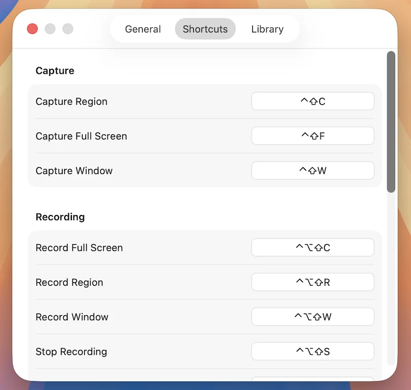

Screenshots,
done right.
Capture, annotate, and organize screenshots, recordings, and series on your Mac.
Free and open source. Needs macOS 14 or later.
No account, no tracking, no in-app purchases.
1. Capture

Region, full screen, or window. Configurable hotkeys.

Screen recording with pause, resume, and different audio sources.

Pick a target once, then snap as many stills of it as you need. All frames land in one item in the library and can be exported to PDF.

2. Annotate
Arrows, text, shapes, highlighter, blur, and non-destructive crop.
3. Keep
-
Library
Every capture saved locally. Organize with tags, search, and filters.
-
Text recognition
Extract text from any capture with OCR, tidied up on-device by Apple Intelligence on macOS 26.
-
Stitch Together
Combine screenshots, recordings, and series into a single video or series of images.
Export
Save as PNG or JPEG, or a whole series as one multi-page TIFF or PDF.
- PNG
- One image
- JPEG
- One image
- TIFF
- A whole series, multi-page
- A whole series, multi-page
Private by default.
No tracking, no account. No item leaves your Mac unless you share it via iCloud link.
Read the privacy policyNative & fast.
Swift + AppKit. Instant launch and very snappy.
Shortcuts
System-wide hotkeys for every capture action, remappable with conflict detection.
